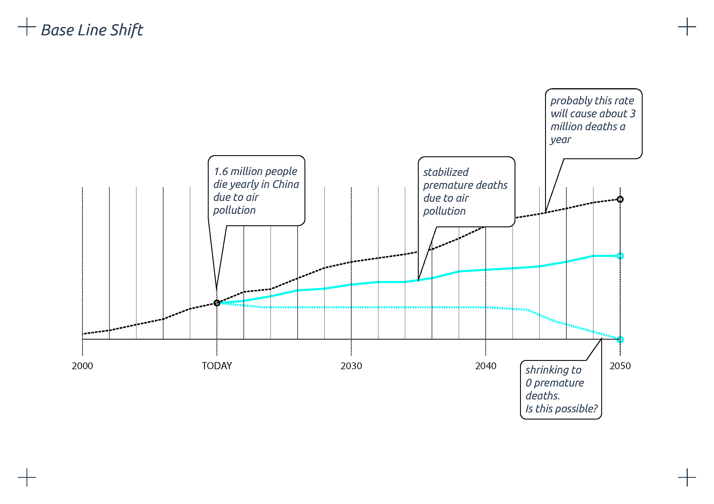
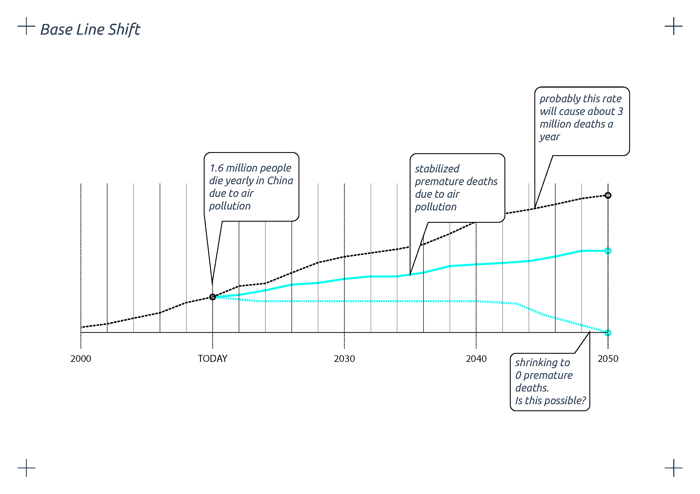

FINAL THESIS PROJECT . GO CITI
A system about dynamism
Normally, humans use information to make decisions. So, what if we would track the city and we would be able to see its effects? Would this help us decide to change some of our behaviours? Would we do it if we could measure how our performance is helping some of the indicators to obtain more desired values? Gociti! is a data-driven system that fosters concious decision-making and participatory democracy.

.jpg)
.jpg)
.jpg)
.jpg)
.jpg)
Let´s imagine that the level of pollution has incraised +2,8% the last month and this information is published somewhere in our GoCiti plantform. This information has been seen by a company which has the idea of implementing new electric scooters within the city in order to solve this issue. This company goes to the municipality asking for foundation. With the amount of money recieved, the company will install all the necessary equipment to make this project real. Once everything is ready, the project will be launched in our GoCiti platform in the form of a CAMPAIGN, and rewarding with a number of points if the user joins. The a user sees the campaign, decides to join it and, once he or she makes enough Km using the product, will get the points as a reward. With all this amount of points collected by joining different campaigns, the user will be able to exchange them in any place within the list of sponsor of the GoCiti platform. The sponsors are the founders of GoCiti platform, this way the points will be always back to the circle.
Gociti can be accessed both digitally and physically
The digital branch contains mainly 3 sections: monitoring shows the performance of the indicators in form of interactive maps and charts which allow filtering through values real-time comparison; campaings is the section where private and publich companies publish their products, services or initiatives to enable citizens to access and join them. Finally, user account is the personal space for users to check their performance, and share and compare it with their friends.
.jpg)
.jpg)
.jpg)
.jpg)
Digital Deployment
Phisical Deployment
GOCITI is a project of IAAC, Institute for Advanced Architecture of Catalonia, developed at MaCT (Master in City & Technology), 2017-18 by:
Students: Najla Aldah, Alba Alsina Maqueda, Irene Rodriguez Vara
Faculty: Francesca Arcuri, Dr.Kathrin DiPaola, Christian Gärtner, Alex Mademochoritis, Frederico Parolotto, Sebastiano Scacchetti, Julius Streifeneder
A system about dynamism Normally, humans use information to make decisions. So, what if we would track the city and we would be able to see its effects? Would this help us decide to change some of our behaviours? Would we do it if we could measure how our performance is helping some of the indicators to obtain more desired values? Gociti! is a data-driven system that fosters concious decision-making and participatory democracy.

Let´s imagine that the level of pollution has incraised +2,8% the last month and this information is published somewhere in our GoCiti plantform. This information has been seen by a company which has the idea of implementing new electric scooters within the city in order to solve this issue. This company goes to the municipality asking for foundation. With the amount of money recieved, the company will install all the necessary equipment to make this project real. Once everything is ready, the project will be launched in our GoCiti platform in the form of a CAMPAIGN, and rewarding with a number of points if the user joins. The a user sees the campaign, decides to join it and, once he or she makes enough Km using the product, will get the points as a reward. With all this amount of points collected by joining different campaigns, the user will be able to exchange them in any place within the list of sponsor of the GoCiti platform. The sponsors are the founders of GoCiti platform, this way the points will be always back to the circle.
Gociti can be accessed both digitally and physically The digital branch contains mainly 3 sections: monitoring shows the performance of the indicators in form of interactive maps and charts which allow filtering through values real-time comparison; campaings is the section where private and publich companies publish their products, services or initiatives to enable citizens to access and join them. Finally, user account is the personal space for users to check their performance, and share and compare it with their friends.